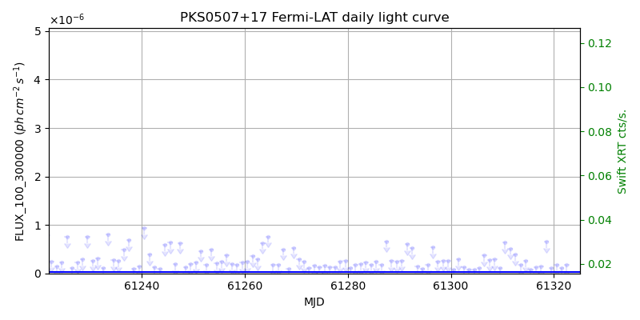
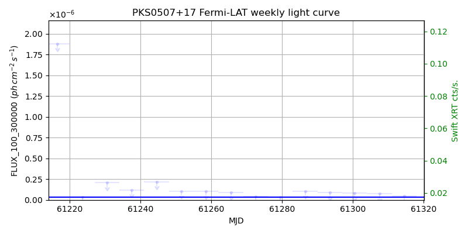
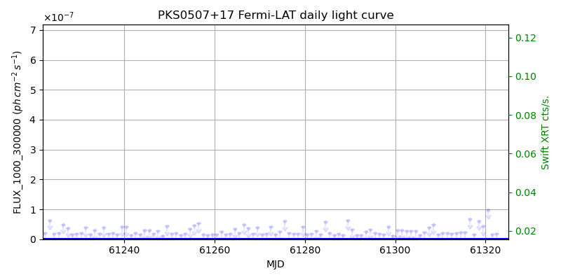
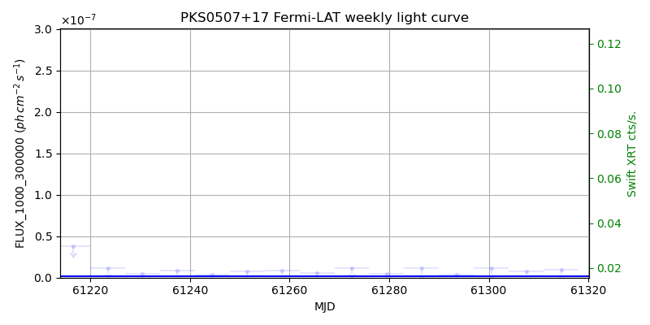

LAT Lightcurve site: https://fermi.gsfc.nasa.gov/ssc/data/access/lat/msl_lc/source/PKS_0507p17
Swift site: https://www.swift.psu.edu/monitoring/source.php?source=PKS0507+17
NED: Query
Time of last update of this page: UT: 2026-10-10 15:15 (MJD: 61323.636)
| Property | Value |
|---|---|
| R.A. | 5:10:02.40 |
| Dec. | 18:00:43.2 |
| z | 0.416 |
| 3FGL SpectrumType | PowerLaw |
| 3FGL PL Index | 2.41 |
| 3FGL Flux_100_300000 | 3.43e-08 1 / (s cm2) |
| 3FGL Flux_1000_300000 | 1.34e-09 1 / (s cm2) |
| 3FGL Flux >200 GeV | 7.62e-13 1 / (s cm2) |
| 3FGL Extrap. Crab >200 GeV | 0.00 |
| 3FGL Flux After EBL Absorption >200GeV | 1.67e-13 1 / (s cm2) |
| 3FGL EBL Crab Fraction >200GeV | 0.00 |

| MJD | dMJD | Flux | dFlux | Frac3FGL | FracCrab>200GeV | EBLFracCrab>200GeV |
|---|---|---|---|---|---|---|
| 61318.50 | 0.50 | 6.58e-07 | 0.00e+00 | 0.00 | 0.00 | 0.00 |
| 61319.50 | 0.50 | 1.15e-07 | 0.00e+00 | 0.00 | 0.00 | 0.00 |
| 61320.50 | 0.50 | 1.80e-07 | 0.00e+00 | 0.00 | 0.00 | 0.00 |
| 61321.50 | 0.50 | 1.14e-07 | 0.00e+00 | 0.00 | 0.00 | 0.00 |
| 61322.50 | 0.50 | 1.69e-07 | 0.00e+00 | 0.00 | 0.00 | 0.00 |

| MJD | dMJD | Flux | dFlux | Frac3FGL | FracCrab>200GeV | EBLFracCrab>200GeV |
|---|---|---|---|---|---|---|
| 61286.50 | 3.50 | 1.06e-07 | 0.00e+00 | 0.00 | 0.00 | 0.00 |
| 61293.50 | 3.50 | 9.07e-08 | 0.00e+00 | 0.00 | 0.00 | 0.00 |
| 61300.50 | 3.50 | 8.32e-08 | 0.00e+00 | 0.00 | 0.00 | 0.00 |
| 61307.50 | 3.50 | 7.24e-08 | 0.00e+00 | 0.00 | 0.00 | 0.00 |
| 61314.50 | 3.50 | 4.41e-08 | 0.00e+00 | 0.00 | 0.00 | 0.00 |

| MJD | dMJD | Flux | dFlux | Frac3FGL | FracCrab>200GeV | EBLFracCrab>200GeV |
|---|---|---|---|---|---|---|
| 61318.50 | 0.50 | 6.09e-08 | 0.00e+00 | 0.00 | 0.00 | 0.00 |
| 61319.50 | 0.50 | 4.32e-08 | 0.00e+00 | 0.00 | 0.00 | 0.00 |
| 61320.50 | 0.50 | 9.82e-08 | 0.00e+00 | 0.00 | 0.00 | 0.00 |
| 61321.50 | 0.50 | 1.65e-08 | 0.00e+00 | 0.00 | 0.00 | 0.00 |
| 61322.50 | 0.50 | 1.76e-08 | 0.00e+00 | 0.00 | 0.00 | 0.00 |

| MJD | dMJD | Flux | dFlux | Frac3FGL | FracCrab>200GeV | EBLFracCrab>200GeV |
|---|---|---|---|---|---|---|
| 61286.50 | 3.50 | 1.11e-08 | 0.00e+00 | 0.00 | 0.00 | 0.00 |
| 61293.50 | 3.50 | 3.72e-09 | 0.00e+00 | 0.00 | 0.00 | 0.00 |
| 61300.50 | 3.50 | 1.15e-08 | 0.00e+00 | 0.00 | 0.00 | 0.00 |
| 61307.50 | 3.50 | 7.70e-09 | 0.00e+00 | 0.00 | 0.00 | 0.00 |
| 61314.50 | 3.50 | 9.09e-09 | 0.00e+00 | 0.00 | 0.00 | 0.00 |
--------------------------------------------------------- Using user-supplied coords: 5:10:02.40 18:00:43.2 2000 --------------------------------------------------------- FLWO UT night of: 2026-10-11 Local Sid. @ Midnight: 00:55 Sunset (-15.0) (local, UT): 19:04 02:04 Sunrise (-15.0) (local, UT): 05:18 12:18 Moonrise (local, UT): Moonset (local, UT): Moon phase: 0.01 --------------------------------------------------------- AzTime LSID UT Obj_el Obj_az Mn_el Mn_az Sep. --------------------------------------------------------- 19:04 19:58 02:04 -26.1 44.9 -16.1 264.2 123.1 19:34 20:29 02:34 -21.4 50.8 -22.3 267.8 123.4 20:04 20:59 03:04 -16.2 56.0 -28.5 271.5 123.7 20:34 21:29 03:34 -10.8 60.8 -34.7 275.4 124.0 21:04 21:59 04:04 -4.5 65.1 -40.8 279.7 124.3 21:34 22:29 04:34 1.2 69.2 -46.8 284.6 124.6 22:04 22:59 05:04 7.0 73.0 -52.7 290.5 124.9 22:34 23:29 05:34 13.1 76.7 -58.4 297.7 125.3 23:04 23:59 06:04 19.4 80.2 -63.6 307.3 125.6 23:34 00:29 06:34 25.7 83.8 -68.1 320.3 126.0 00:04 00:59 07:04 32.1 87.5 -71.3 338.2 126.3 00:34 01:29 07:34 38.5 91.4 -72.6 0.4 126.7 01:04 01:59 08:04 44.8 95.7 -71.5 22.7 127.1 01:34 02:30 08:34 51.2 100.7 -68.3 40.8 127.4 02:04 03:00 09:04 57.4 106.8 -63.9 54.1 127.8 02:34 03:30 09:34 63.4 114.7 -58.7 63.8 128.1 03:04 04:00 10:04 68.9 126.0 -53.1 71.2 128.5 03:34 04:30 10:34 73.5 143.2 -47.3 77.2 128.8 04:04 05:00 11:04 76.1 168.8 -41.4 82.2 129.1 04:34 05:30 11:34 75.7 198.5 -35.3 86.6 129.5 05:04 06:00 12:04 72.4 222.0 -29.2 90.6 129.8 05:18 06:14 12:18 70.4 229.7 -26.5 92.4 129.9 --------------------------------------------------------- Dark hours >55 deg.: 3.42 srcstart (UT): 2026-10-11 08:52 srcend (UT): 2026-10-11 12:17